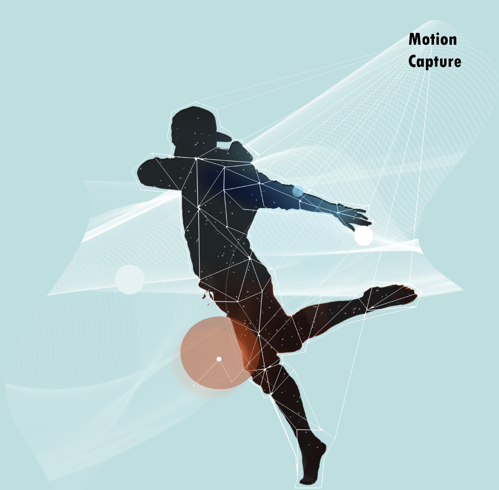

In the past, the dancers and the multimedia content may synchronize with each other perfectly as if interaction technology is used, but it is actually the dancers' movement that deliberately synchronizes with the fixed multimedia content to produce pseudo interactive effects.
Recent interactive dance performance:
Tokyo, P.I.C.S – “EXISDANCE” (2017)
France, Adrien Mondot & Claire Bardainne – “The movement of air” (2015)
The above interactive performance system does not provide a more user-friendly interface. As for the artists which don’t have technical background, there are not enough incentive to use.
To break the limitations, I propose an interactive dance performance system. The choreographers or field control crew can use the control interface on the Max/Msp system through Mira application on iPad to switch the effects of generated imagery or to modify the parameters of effects in real-time easily.
Interactive Dance Performance System
Combing the Wireless Wearable Sensing Device and the Generated Imagery based on Particle Effects
